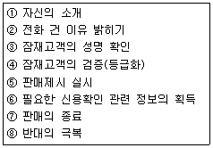
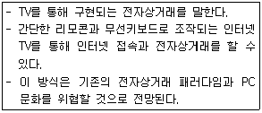
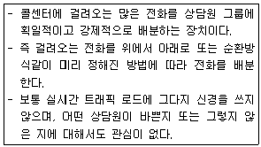
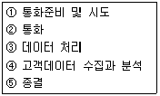
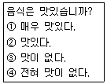
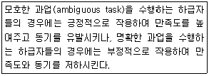
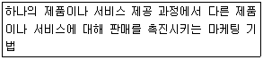

텔레마케팅관리사 (2005-03-20 기출문제)
1과목: 판매관리
1. 다음은 Call Guide에 의한 전화걸기의 단계별 행동 요령이다. 성공적인 텔레마케팅을 위한 순서를 가장 올바르게 연결한 것은?

- ① → ③ → ④ → ② → ⑤ → ⑧ → ⑥ → ⑦
- ③ → ① → ④ → ② → ⑤ → ⑧ → ⑦ → ⑥
- ③ → ① → ② → ⑥ → ④ → ⑤ → ⑧ → ⑦
- ③ → ① → ② → ④ → ⑤ → ⑧ → ⑦ → ⑥
(정답률: 알수없음)

2. 아웃바운드 텔레마케팅의 성공을 위해 1차적으로 필요한 요소가 아닌 것은?
- 고객 데이터
- 제안(offer)
- 커뮤니케이션 기획력
- 위기 모면 능력
(정답률: 알수없음)
3. 데이터베이스(Database) 마케팅을 설명한 것 중 옳은 것은?
- PC만을 이용하여 표준화된 제품으로 불특정 다수의 고객에 접근하는 마케팅이다.
- 대중매체를 통하여 전국적으로 대중에게 자사의 상표인지도를 높게 유지하는 것이다.
- Database 마케팅은 VIP고객 리스트만을 이용한 마케팅기법이다.
- Database 마케팅에서 database는 고객의 개인별 특성을 담고 있어야 한다.
(정답률: 50%)
4. 다음은 어떤 용어에 대한 설명인가?

- P2P 서비스
- 인터넷 경매
- T-커머스
(정답률: 알수없음)
5. 텔레마케팅 분야의 전문 인력과 관계없는 것은?
- 고객
- 텔레마케터
- 슈퍼바이저
- 관리자
(정답률: 알수없음)
6. 아웃바운드 텔레마케팅의 정의로 올바른 것은?
- 기업의 내부적 업무 중 일부를 다른 기업에 맡기는 것을 칭한다.
- 텔레마케터가 걸려온 고객의 전화에 대해 응대하는 것이다.
- 텔레마케터가 고객에게 전화하는 적극적인 형태의 텔레마케팅이다.
- 전화를 하기 위해 사용하는 일반 회선이나 중계회선을 말한다.
(정답률: 알수없음)
7. ANI(automatic number identification)서비스는 무엇을 말하는가?
- 자동응답시스템
- 고객콜센터
- 발신자번호 자동인식 장치
- 컴퓨터 전화 통합시스템
(정답률: 알수없음)
8. 텔레마케팅 용어의 설명이 잘못된 것은?
- on-hook : 전화수화기가 들려진 상태
- Queue : ACD내의 응답을 기다리는 일련의 통화
- ASA : 전화 응답하는데 걸리는 평균시간
- ARS :자동응답시스템
(정답률: 알수없음)
9. 수신된 콜 수에서 응대를 한 건수 중에서 주문으로 획득한 건수가 차지하는 비율은?
- 주문획득률
- 수신콜 응답률
- 콜서비스 목표율
- 자동 교환률
(정답률: 알수없음)
10. 다음 설명에 대한 용어로 맞는 것은?

- Voice Announcement System(VAS)
- Unattended Call Distributor(UCD)
- Automatic Calling Distributor(ACD)
- Call Sequencer
(정답률: 알수없음)
11. 아웃바운드 텔레마케팅 전개의 핵심요소와 그에 대한 설명이 잘못 연결된 것은?
- 대상고객의 데이터 확보 - 고객 분류에 맞는 상품 및 서비스 제안
- 정교한 스크립트와 데이터 시트 - 고객의 상황, 마케팅상황에 따라 탄력적 활용
- 고도로 숙달된 아웃바운드 텔레마케터 - 목표달성과 고객관리 및 상담능력이 뛰어난 텔레마케터
- 콜센터 구축 및 콜처리를 위한 환경 - 자동 콜 및 예약시스템 등의 구비
(정답률: 알수없음)
12. 고객관계관리를 설명하는 것 중 옳은 것은?
- 새로운 고객을 많이 확보하는데 적합한 마케팅기법이다
- 고속도로 휴게소 식당에서 고객을 유인하는데 적합한 마케팅이다.
- 기존고객을 단골고객으로 계속 유지하는데 적합한 마케팅기법이다.
- 내부고객의 상담을 목적으로 하는 마케팅기법이다.
(정답률: 알수없음)
13. CRM을 구현하기 위해 콜센터에서 활용되는 고객과의 상호작용시스템이 아닌 것은?
- 전자우편
- 웹커뮤니케이션
- 음성시스템
- SFA(Sales Force Automation)
(정답률: 알수없음)
14. 직접적인 표본 추출 방법 중 바르지 않은 것은?(오류 신고가 접수된 문제입니다. 반드시 정답과 해설을 확인하시기 바랍니다.)
- 지역적 표본 추출 시 전화번호부에 표기된 지역번호 구분이 아니라 행정적 경계에 따라 표본단위를 정하는 것이 좋다.
- 가나다순으로 되어 있는 기존 전화번호부에서 표본을 추출할 때에는 체계적 표본추출법을 사용하는 것이 좋다.
- 전화번호부를 활용할 때 맨 앞과 맨 끝은 배제하는 것이 좋다.
- 전화번호부를 이용한 전화조사를 할 경우 먼저 조사지점을 결정하고 가능한 최근의 전화번호부를 준비해야 한다.
(정답률: 알수없음)
15. 데이터베이스마케팅(Database Marketing)에 대한 내용으로 옳지 않은 것은?
- 잠재고객에 대한 리스트 확인이 가능하다.
- 고객에게 개별적으로 접근하는 것이 불가능하다.
- 판매활동으로써의 활용도가 증대되고 있다.
- 고객과의 관계 관리가 용이하다.
(정답률: 알수없음)
16. Target Marketing(표적 마케팅)의 단계가 올바른 것은?
- 표적시장 계획단계 → 시장보완전략 개발단계 → 시장목표 실현단계 → 시장세분화 단계 → 시장 차별화 수행단계
- 시장세분화 단계 → 시장보완전략 개발단계 → 표적시장 계획단계 → 시장 차별화 수행단계 → 시장목표 실현단계
- 시장보완전략 개발단계 → 시장세분화 단계 → 표적시장 계획단계 → 시장 차별화 수행단계 → 시장목표 실현단계
- 시장 차별화 수행단계 → 시장목표 실현단계 → 시장세분화 단계 → 표적시장 계획단계 → 시장보완전략 개발단계
(정답률: 알수없음)
17. 아웃바운드 TM의 전개과정을 올바르게 나열한 것은?

- ④ → ① → ② → ③ → ⑤
- ② → ④ → ① → ③ → ⑤
- ④ → ③ → ① → ② → ⑤
- ③ → ④ → ① → ② → ⑤
(정답률: 알수없음)
18. CPR(Cost Per Response)에 대한 설명으로 옳은 것은?
- 1콜당 평균 비용을 말하는 것으로 1인 1시간당 비용을산출하여 1시간당 평균 발신건수 또는 평균 도달 건수로 나누어 구분한다.
- 주문당 평균비용 즉, 1건의 주문을 받는데 들어간 비용을 말한다.
- 건 당 반응 비용 = 1건의 반응을 얻는데 소요된 비용
- 리드를 주문으로 변환시키는 비율
(정답률: 알수없음)
19. 고객에게 판매를 권유하는 방법으로 적절치 않은 것은?
- 고객의 형편에 따라서 적절히 처리 대응한다.
- 자사와 상품에 대하여 좋은 점을 이야기 한다.
- 상품과 관련되는 문제점도 이야기 한다.
- 구매자보다는 판매자가 선호하는 상품을 추천한다.
(정답률: 알수없음)
20. 고객의 평생가치란 무엇인가?
- 처음으로 자사제품을 구입한 때부터 고객이 사망하는 시점까지의 기간
- 특정 회사의 제품이나 서비스를 처음 구매하거나 요청한 기간
- 특정 회사의 서비스나 제품을 구매한 날로부터 최종 반품처리한 날까지의 기간
- 특정 회사의 제품이나 서비스를 처음 구매했을 때부터 시작해서 마지막으로 구매할 것이라고 판단되는 시점까지 구매가 가능한 제품이나 서비스의 누계
(정답률: 알수없음)
21. CRM 도입의 이유로 볼 수 없는 것은 ?
- 기업의 성장전략변화
- 신속하고 일관성 있는 고객대응의 필요성
- 불만고객에 대한 신속한 고객리스트 삭제
- 고객에 대한 접근 방법의 발전
(정답률: 알수없음)
22. 전체시장을 대상으로 하지 않고 소비자 특성에 맞게 세분화한 소비자집단의 욕구에 대응하는 마케팅은?
- 대중 마케팅(mass marketing)
- 표적 마케팅(target marketing)
- 일반 마케팅(qeneral marketing)
- 스폰서십 마케팅(sponsorship marketing)
(정답률: 알수없음)
23. 유통 경로에 대한 설명으로 옳은 것은?
- 제품 생산 시 한 공정에서 다른 공정으로 이동하는 경로
- 판매자가 소비자에게 상품을 배달할 때 제일 빠른 이동경로를 말한다.
- 상품이 생산자에서 소비자에게 직접 또는 중간상인을 통하여 판매되는 경로를 말한다.
- 상품이 대리점에서 제품 생산 본사로 전달되는 것을 뜻한다.
(정답률: 알수없음)
24. 아웃바운드 텔레마케팅의 개념과 거리가 먼 것은?
- 외부의 잠재고객이나 기존고객에게 전화를 걸어 수행하는 마케팅 활동이다.
- 아웃바운드 TM은 상담 및 판매기술이 뛰어난 텔레마케터가 소비자에게 판매상품을 설명, 설득하여 최종적으로 구매를 유도하는 것이다.
- 아웃바운드 TM은 고객층을 파악하기 위한 고객명단이 확실히 준비되어야 효과적이다.
- 아웃바운드 TM은 고객에게 카탈로그나 DM을 발송하여 주문을 받는 방법이다.
(정답률: 알수없음)
25. 데이터베이스를 활용한 고객의 등급 분류는 아웃바운드 텔레마케팅 판촉 활동의 소중한 자료이다. 고정 고객으로서의 역할뿐만 아니라 다른 사람들에게도 자사의 제품 또는 서비스를 권유하는 고객은?
- 타 회사의 고객
- 옹호 고객
- 비활동 고객
- 탈락 고객
(정답률: 알수없음)
2과목: 시장조사
26. 정확도가 가장 높은 시장조사 방법은?
- 실험법
- 질문법
- 관찰법
- 비교법
(정답률: 알수없음)
27. 측정 원칙의 주요한 기준은 무엇인가?
- 효율성과 신속성
- 타당성과 신속성
- 타당성과 신뢰성
- 효율성과 정확성
(정답률: 알수없음)
28. 응답자들에게 설문지가 우편으로 보내진 다음 설문지에 응답하고 회송용 봉투에 설문지를 넣어 보내주는 방식의 조사방법은?
- 전화조사
- 우편조사
- 면접조사
- 모바일조사
(정답률: 알수없음)
29. 우편조사법과 전화조사의 공통적인 장점이 아닌 것은?
- 시간과 경비를 절약할 수 있다.
- 통제가 용이하다.
- 사려 깊은 응답가능성이 있다.
- 직접 면접이 어려운 사람에게 이용할 수 있다.
(정답률: 알수없음)
30. 면접조사의 장점으로 옳지 않은 것은?
- 면접자가 응답자의 상황에 따라 대화분위기를 자연스럽게 조절할 수 있다.
- 대화를 통한 응답자의 적극적인 참여 유도가 가능하다.
- 면접의 오류, 오해를 극소화 할 수 있다.
- 면접의 특성에 따라 즉석에서 대답할 수 없는 경우가 발생될 수 있다.
(정답률: 알수없음)
31. 표본의 크기를 결정하는데 고려해야 하는 요소 중 적절하지 않은 것은 무엇인가?
- 비표집 오차
- 모집단 요소의 동질성
- 조사의 목적
- 모집단의 크기
(정답률: 알수없음)
32. 자료수집의 내용 설명 중 틀린 것은?
- 1차 자료는 조사자가 조사 프로젝트를 수행하면서 직접 수집해야 하는 자료이다.
- 2차 자료는 현재 조사 프로젝트를 수행하고 있는 조사자가 아닌 다른 주체에 의해서 이미 수집된 자료이다.
- 2차 자료는 사내에서 먼저 구하고, 다음에 사외의 연구기관이나 공공기관 등 여러 원천으로부터 구하게 된다.
- 2차 자료는 일반적으로 시간이 많이 필요하고 비용이 많이 소요된다.
(정답률: 알수없음)
33. 일정기간 반응이 없는 고객의 리스트나, 상당 기간 지난고객 리스트에 대한 데이터를 체크·관리 하는 것을 무엇이라 하는가?
- 리스트 클리닝
- 데이터 탐색
- 자료 추출
- 모집단 관리
(정답률: 알수없음)
34. 시장조사 전개 시 고려해야 할 사항이 아닌 것은?
- 합목적성
- 적합성
- 주관성
- 신뢰성
(정답률: 알수없음)
35. 질문서 작성에 있어서 유의해야 할 사항으로 부적합한 것은?
- 질문서는 조사의 목적과 응답자의 입장에서 작성되어야 한다.
- 질문서는 명목척도만을 이용하여 작성되어야 한다.
- 질문서에 사용된 어휘는 응답자의 수준에 맞게 용어가 선택되어야 한다.
- 질문서는 조사정보의 구조와 기능을 염두에 두고 작성되어야 한다.
(정답률: 알수없음)
36. 지표구성에 있어 문항의 관계성을 검토하는 방법으로 적절하지 않은 것은 무엇인가?
- 변량분석
- 교차분할표
- 양류상관계수
- 정준상관계수
(정답률: 알수없음)
37. 텔레마케터가 전화조사 시 정확한 의미전달을 위해 용어선택 시 고려해 볼 점으로 적절하지 않은 것은?
- 이 단어는 2가지 이상의 발음을 가지는가?
- 혼돈할 수 있는 비슷한 발음의 단어가 있는가?
- 이 단어가 다른 의미를 가지고 있지는 않는가?
- 적당히, 조금, 거의, 약간 등은 그 말이 그 말이므로
(정답률: 알수없음)
38. 측정대상간의 순서관계를 밝혀주는 척도로서, 측정대상을 특정한 속성으로 판단하여 측정 대상 간에 대소나 높고 낮음 등의 순위를 부여해주는 척도는?
- 명목척도
- 서열척도
- 등간척도
- 비율척도
(정답률: 알수없음)
39. 전화조사의 특징이 아닌 것은?
- 지역제한을 받지 않는다.
- 경제적이고 효율적이다.
- 비교적 시간적 제한이 있다.
- 융통적이고 제한적이다.
(정답률: 알수없음)
40. 시장조사의 조사방법 중 탐색조사의 종류가 아닌 것은?
- 문헌조사(literature search)
- 표적집단면접법(focus group interview)
- 사례조사(case study)
- 실험조사(experimental research)
(정답률: 알수없음)
41. 소비자의 구매행동 분석과 관계없는 것은?
- 상표인지도
- 의사결정자
- 소비자의 생활양식
- 경쟁회사의 수
(정답률: 알수없음)
42. 설문지 조사에 있어 주의 사항 중 올바르지 않은 것은?
- 너무 자세한 질문은 피해야 한다.
- 대답하기 곤란한 질문은 간접적으로 물어야 한다.
- 너무 논리적이거나 질문의 순서를 고려하는 것은 정확한 답변을 방해한다.
- 유도 질문은 삼가 해야 한다.
(정답률: 알수없음)
43. 자동 전화조사 방법의 특성이 아닌 것은?
- 전화조사 시 발생되는 인원, 경비, 시간 등을 줄일 수 없다.
- 전화 횟수의 자동 카운팅, 전화 콜처리 시간 체크, 응답자 성명 등을 자동 기록한다.
- 상담원이 응답자와 서베이를 수행하는 동안 모니터링이 가능하다.
- 콜 평균처리시간, 시간당 콜 완료건수, 통화중 신호콜 수, 중단건수, 거부건수 등 성과를 측정할 수 있다.
(정답률: 알수없음)
44. 전화조사에서 발생될 수 있는 무응답 오류에 대한 설명으로 옳은 것은?
- 데이터 분석에서 나타나는 오류
- 부적절한 질문으로 인하여 나타나는 오류
- 조사와 관련 없는 응답자를 선정하여 나타나는 오류
- 응답자의 거절이나 비접촉으로 나타나는 오류
(정답률: 73%)
45. 확정적 조사를 실행하기 전에 조사문제의 특성과 조사문제와 관련된 변수를 명확히 하고 조사에 대한 사전 경험을 얻기 위해 실시하는 조사를 무엇이라고 하는가?
- 탐색적 조사
- 확정적 조사
- 서술조사
- 인과조사
(정답률: 알수없음)
46. 코딩과 분석이 용이하고, 응답하기가 쉽고 협조를 쉽게 얻어낼 수 있으며 조사자에 의한 영향을 배제할 수 있는 질문형태는?
- 자유응답형
- 양자택일형
- 다지선다형
- 가치개입형
(정답률: 알수없음)
47. 다음은 어떤 설문지 형태인가?

- 개방형 설문지
- 폐쇄형 설문지
- 일방형 설문지
- 복합형 설문지
(정답률: 알수없음)
48. 시장조사의 첫 단계인 "문제정의"에 대한 설명에 해당되는 것은?
- 연구목적, 관련된 배경정보, 필요한 정보와 이 정보가 마케팅 의사결정에 어떻게 사용될 것인지의 고려가 필요하다.
- 조사의 목적이나 이론적 틀, 분석모델, 연구 질문, 가설 등을 공식화하고 리서치 디자인에 영향을 줄 수 있는 요인이나 특성을 규명한다.
- 현장에서 개인면접, 우편면접, 전화조사 등의 방법을 통해 조사한다.
- 자료의 편집, 코딩, 복사 그리고 검증 등을 포함한다.
(정답률: 알수없음)
49. 시장조사에 있어 과학적 접근방법(조사, 연구방법)에 대한설명으로 옳지 않은 것은?
- 과학적 조사는 의사결정 문제를 해결하기 위하여 조사절차를 체계적이고 실증적으로 수행하는 것을 말한다.
- 과학적 조사는 현상 속에서 발생하는 연관성에 대해 가정을 설정하고 이를 체계적이고, 통제적으로, 실증적이고, 핵심적으로 조사하는 것이다.
- 과학적 접근방법만이 사회현상의 진리를 터득하는 유일한 방법으로 근대 산업사회 발전의 초석이 되었다.
- 과학적 조사는 추론에 근거하며, 귀납적 방법과 연역적 방법으로 나눈다.
(정답률: 90%)
50. 설문지 구성 시 왜곡된 응답을 줄일 수 있는 설명으로 잘못된 것은?
- 조사자와 응답자 사이에 라포(rapport)가 형성되도록 한다.
- 조사 시간을 응답자의 편리한 시간으로 정한다.
- 설문지를 작성할 때 사전 조사를 실시한다.
- 민감한 질문은 서두에 미리 한다.
(정답률: 90%)
3과목: 텔레마케팅관리
51. 텔레마케터의 교육에 최소한 포함되어야 할 항목으로 옳지 않은 것은?
- 전화응대 기법
- 상품 지식
- 초적인 시스템 활용법
- 불평고객 회피법
(정답률: 알수없음)
52. 텔레마케터에 대한 모니터링 시 고려해야 할 사항과 그에 대한 설명 중 가장 거리가 먼 것은?
- 전화 받는 태도 - 경어를 사용하고 친근한 어투로 강약
- 경청하는 능력 - 상대방의 이야기를 잘 듣고 요구사항이 무엇인지를 파악한다.
- 메모 - 많은 전화를 하는 것이 중요하므로 고객과의 대화는 메모하지 않는다.
- 친절, 서비스마인드 - 텔레마케터에게 스마일은 자연적으로 몸에 배어 있어야 한다.
(정답률: 알수없음)
53. 텔레마케터의 통화품질을 평가할 때 고려사항이 아닌 것은?
- 나이, 출신학교, 신장
- 음성능력, 표현능력, 정확한 발음
- 구술능력, 조직적응력, 목표의식
- 음성능력, 청취력, 집중력
(정답률: 알수없음)
54. 콜센터 운영에 적합한 제품이나 서비스를 선택할 때 고려해야 할 사항이 아닌 것은?
- 가격과 결제조건
- 상담제공능력
- 단발성(일회성)
- 사후관리성
(정답률: 알수없음)
55. 스크립트에 대한 설명 중 옳지 않은 것은?
- 활용 목적을 명시 한다.
- 간단명료하게 작성한다.
- 수정은 할 수 없다.
- 대화체로 작성한다.
(정답률: 알수없음)
56. 텔레마케팅의 정의 중 옳지 않은 것은?
- 대면접촉에 의해 인적 판매를 수행하는 잘 계획되고 조직, 관리된 마케팅 프로그램
- 데이터베이스와 결합된 정보통신 기술을 이용하여 비즈니스 상품과 서비스를 촉진
- 정보통신 수단을 매개로 체계적으로 계획되고 조직화된 방식으로 판매자와 구매자의 일대일 커뮤니케이션
- 잘 훈련되고 조직화된 인적집단을 중심으로 정보통신기술을 이용 고객욕구 충족과 기업목적을 수행
(정답률: 알수없음)
57. 통화 품질 관리의 목적으로 가장 적합한 것은?
- 텔레마케터의 사적인 통화 방지
- 텔레마케터가 제대로 통화하는지 감시
- 통화 품질 결과를 텔레마케터의 급여에 반영
- 통화품질 개선으로 고객에 대한 서비스 향상
(정답률: 알수없음)
58. 인쇄매체를 통한 마케팅과는 달리 텔레마케팅이 갖고 있는 가장 큰 특성은?
- 예약 가능성
- 쌍방향성
- 대중성
- 타겟 도달성
(정답률: 알수없음)
59. 인바운드 텔레마케팅에서 성과달성을 위한 상담원 코칭 시에 고려해야 할 사항이 아닌 것은?
- 고객접근용이성
- 사전예측성
- 서비스성
- 과도한 업무성
(정답률: 알수없음)
60. 상담원들이 고객과 통화하는 과정에서 콜센터에서 약속한통화의 기본사항을 정확히 준수하는지를 확인, 평가하여 궁극적으로 상담원의 통화품질 향상을 도와주는 역할을 하는 사람은?
- 수퍼바이저
- 조장
- QAA
- STAFF
(정답률: 알수없음)
61. 리더십의 핵심 역할이 아닌 것은?
- 리더는 집단의 역량보다는 개인역량을 촉진한다.
- 리더는 조직원이 적극적으로 목표달성에 기여할 수 있도록 동기부여 시킨다.
- 리더는 외부환경 변화에 대해 민감하고 변화를 촉진하게 한다.
- 리더십은 조직 전체의 성과에 영향을 준다.
(정답률: 알수없음)
62. 콜센터 조직의 특성으로 옳은 것은?
- 기업 중심적이다.
- 고객의 가치를 중시한다.
- 1:1 대면 접촉이다.
- 정보와 커뮤니케이션을 매개로 하지 않는다.
(정답률: 알수없음)
63. 평균처리시간이 길어질 경우 생산성 관리를 위한 조치로 적합하지 않은 것은?
- 모든 상담을 ARS로만 처리한다.
- 근무집중도가 떨어지는 이유가 있는지를 확인한다.
- 스크립트가 불충분하거나 부정확한지 확인한다.
- 적정인력의 투입여부를 확인한다.
(정답률: 알수없음)
64. 콜센터의 개인성과 측정기준 중 질적 기준에 해당하는 것은?
- 시간당 처리콜수
- 고객불만도
- 평균통화시간
- 성공적 통화율
(정답률: 알수없음)
65. 전통적인 마케팅 기법인 마케팅 믹스의 구성 요소(4P)가 아닌 것은?
- 가격
- 유통
- 제품
- 고객
(정답률: 알수없음)
66. 텔레마케팅은 어떤 단어의 조합으로 만들어진 용어 인가?
- Television(텔레비전)＋Marketing(마케팅)
- Telephone(전화)＋Marketing(마케팅)
- Telecommunication(전기통신)＋Marketing(마케팅)
- Tele-sale(통신판매)＋Marketing(마케팅)
(정답률: 알수없음)
67. 콜 센터 정량적 평가 지표인 서비스레벨에 대한 설명으로 옳지 않은 것은?
- 전화 응대 스크립트의 품질 수준을 나타내는 지표이다.
- "X %의 콜을 Y 시간 내에 응대" 와 같은 형식으로 표시한다.
- 통화 고객들의 통화대기시간에 대한 평균적인 수준을 가장 잘 나타내 주는 지표이다.
- 인바운드 콜 센터의 대표적인 관리 지표 중 하나이다.
(정답률: 알수없음)
68. 텔레마케터가 갖추어야 할 능력에 대한 설명 중 가장 거리가 먼 것은?
- 외모 및 운동신경
- 훌륭한 청취력, 상대에 대한 이해와 배려
- 표현 및 구술능력
- 정서적 안정과 자기회복 능력
(정답률: 알수없음)
69. 아웃바운드형 콜센터의 설명으로 옳지 않은 것은?
- 아웃바운드형 콜센터는 보다 더 성과지향적이고 수익지향적이다.
- 높은 성과와 수익 창출을 올릴 수 있는 전문조직체이지만 잘못 운영하면 커다란 위험에 놓일 수도 있다.
- 아웃바운드형 콜센터는 기업주도형이기 때문에 고객에 대해 뚜렷한 목적을 가지고 임해야 한다.
- 아웃바운드형 콜센터는 전문 텔레마케터만 갖추어져 있으면 고객에 대한 양질의 데이터는 없어도 된다.
(정답률: 알수없음)
70. 다음의 상황에 맞는 리더쉽의 유형은?

- 지시적 리더쉽
- 후원적 리더쉽
- 참여적 리더쉽
- 위임적 리더쉽
(정답률: 알수없음)
71. ACD(Auto Call Distributor)의 주기능으로 옳은 것은?
- 통화시간과 콜에 대한 기록을 제공하는 기능
- 현재 인입된 호의 양을 파악하기 위한 기능
- 아웃바운드를 효율적으로 하기 위한 자동걸기 기능
- 텔레마케터의 호 부하량 균등 분배를 위한 기능
(정답률: 알수없음)
72. OJT가 성공하기 위한 관리자의 태도가 아닌 것은?
- 상담원과 공동으로 목표를 세운다.
- 관리자 자신의 관심사만을 열거한다.
- 적시에 Feed Back을 행한다.
- 결과를 평가하고 확인한다.
(정답률: 알수없음)
73. 텔레마케터의 역할로서 맞지 않는 것은?
- 예상되는 고객의 질문이나 상담내용을 자세히 기록하는 것은 매니저가 하는 일이다.
- 텔레마케터는 회사의 업무나 제품에 관한 내용을 정확히 이해하여야 한다.
- 텔레마케터는 기업의 이미지 향상을 위해 노력해야 한다.
- 고객의 특수한 요구나 고충 등은 혼자판단하지 말고 감독자에게 보고한다.
(정답률: 알수없음)
74. CTI의 주요 기능으로 적당하지 않은 것은?
- 자동착신호분배 및 녹취 기능
- 자료전송 및 음성사서함 기능
- 송신호에 대한 자동 정보제공 기능
- 자동 전화걸기 기능
(정답률: 알수없음)
75. 상담원에 대한 기본교육으로 적절치 않은 것은?
- 회사에 대한 이해와 비전(vision)
- 상담원에게 필요한 자질
- 조직 및 인사관리
- 테이프 녹음과 화법 연습
(정답률: 알수없음)
4과목: 고객응대
76. 인바운드 전화 상담이 아닌 것은?
- 고객 정보를 활용한 맞춤응대
- 고객서비스의 질적 개선사항 도출
- 신규 리스트를 활용한 가망 고객 발굴
- 주문접수 처리
(정답률: 알수없음)
77. 텔레마케팅을 통한 효과적인 잠재고객의 신규·고정 고객화 방법으로 옳지 않은 것은?
- 관심이 있고 이용 가능성이 높은 고객을 대상으로 집중 접촉하거나 설득한다.
- 잠재고객과 지속적인 유대관계를 갖기 위해 고객에게 필요한 정보를 제공한다.
- 고객정보를 근거로 의도적으로 접근하여 강압적으로 전화를 한다.
- 고객의 성향별로 차별화 전략을 세우고 지속적으로 특별관리를 한다.
(정답률: 알수없음)
78. 고객에게 긍정적인 이미지를 심어 주기 위한 텔레마케터의 능력과 관련이 없는 것은?
- 자신감
- 전문성
- 신뢰감
- 우월감
(정답률: 알수없음)
79. 청자가 효과적으로 듣기 위한 방법이 아닌 것은?
- 화자가 말하는 내용의 핵심을 파악한다.
- 화자의 진정한 의도나 목적을 알도록 한다.
- 화자가 전달하고자 하는 내용을 간파한 후에 그에 적합한 반응을 나타낸다.
- 화자의 의도가 잘못되었다면 즉시 듣기를 중단하고 반응할 내용을 정리해 나간다.
(정답률: 알수없음)
80. 다음 용어에 대한 설명으로 옳은 것은?

- 업셀링(Up-selling)
- 크로스셀링(Cross-selling)
- 마케팅믹스(Marketing Mix)
- 아웃바운드 텔레마케팅(Outbound Telemarketing)
(정답률: 알수없음)
81. 텔레마케팅은 반드시 제품의 판매만을 목적으로 하지는 않고 고객과의 관계 강화를 위해서도 하게 된다. 제품을 구매한 고객에게 제품 구매 후 일정 시점에 제품 사용에 따른 불편함을 확인하면서 감사의 인사를 통해 관계를 강화하는 목적으로 하게 되는 전화를 무엇이라 하는가?
- 인바운드 콜
- 독촉 콜
- 콜백
- 땡큐 콜
(정답률: 알수없음)
82. 다른 사람에게 메시지를 전달하는 수단으로 앨버트 메르비안은 바디랭귀지, 어투, 말의 내용 3가지 요소를 들고 있다. 이 세 가지 요소 중 어투가 차지하는 비율은 전체의 몇 %를 차지하는가?
- 45%
- 38%
- 55%
- 7%
(정답률: 알수없음)
83. 고객응대에 대한 설명으로 옳지 않은 것은?
- 가.텔레마케터가 비대면 방식으로 갖는 커뮤니케이션이다.
- 대화예절이 수반되며 각종 정보 숙지, 애로사항, 불만사항의 문제해결 관련 상담 전문성이 중요하다.
- 고객의 욕구 파악을 위해서는 부정적인 질문과 비판도 중요하다.
- 고객응대에 있어 성의, 창의, 열의 등 기본적인 마음가짐이 있어야 한다.
(정답률: 알수없음)
84. 고객이 불평, 불만을 호소하는 단계로서 올바른 것은?
- 비공식적인 단계 → 공식적인 단계 → 법적인 호소
- 법적인 호소 → 비공식적인 단계 → 법적인 호소
- 비공식적인 단계 → 법적인 호소 → 공식적인 단계
- 법적인 호소 → 공식적인 단계 → 비공식적인 단계
(정답률: 80%)
85. 전화응대의 3요소에 해당되지 않는 것은?
- 신속
- 절제
- 친절
- 정확
(정답률: 알수없음)
86. 다음 중 마인드 컨트롤에 방해가 되는 요소들을 모두 고른 것은?
- 스트레스
- 고정화된 관념, 습관
- 과다한 목표 설정
- 업무에 대한 두려움
(정답률: 알수없음)
87. 인바운드 콜센타의 상담업무특성과 관련한 텔레마케터의역할로 옳지 않은 것은?
- 업무시작 전 고객서비스의 중요성의 재인식과 공감대 형성
- 일자별, 월별 등 수신 통화량의 변화에 대처하기 위한 자기관리 (음성관리, 체력관리, 시간관리 등)
- 서비스, 상품 관련 변경사항 등의 신속한 숙지
- 모든 고객의 질문에 대해서는 기존 스크립트에 표현된 내용만으로 답변
(정답률: 알수없음)
88. 상담원의 일상적인 스트레스 해소를 위한 효과적인 대응방안이 아닌 것은?
- 심호흡 및 명상
- 근스트레칭 및 체조
- 휴식 및 짧은 수면
- 음주 및 흡연
(정답률: 알수없음)
89. 텔레마케팅 커뮤니케이션의 성공조건에 해당되지 않는 것은?
- 경청을 통하여 고객이 말할 수 있는 기회를 제공
- 고객의 니즈 파악
- 흥미유발과 관심유도로 사적인 대화분위기 조성
- 고객에게 이익과 만족을 주는 커뮤니케이션
(정답률: 58%)
90. 텔레마케터의 올바른 태도가 아닌 것은?
- 자신감과 미소
- 최대한 쉽게 말한다.
- 천편일률적인 응대
- 리드미컬하게 말한다.
(정답률: 알수없음)
91. 인바운드 상담에 대한 설명으로 거리가 먼 것은?
- 고객의 질문에 응답하기 위한 문의 상담 기능이 강하다
- 광고, 경험, 구전 등에 의한 고객의 기대 가치에 대한 신속한 대응이 필요하다.
- 고객의 질문에 응답하기 위해 Q&A 시트를 주로 활용한다.
- 인바운드 고객상담은 기업 주도형이다.
(정답률: 알수없음)
92. 고객의 행동에 따른 응대요령 중에서 충실한 자료와 증거를 제시하고 애매한 일반화는 피하는 것이 효과적인 고객의 유형은?
- 추진형
- 표현형
- 온화형
- 분석형
(정답률: 알수없음)
93. 고객은 텔레마케터로부터 인정과 존중, 수용의 욕구를 가지고 있다. 이러한 고객의 욕구를 충족시켜 줄 수 있는 고객응대 내용으로 옳은 것은?
- 성실성
- 간접성
- 명료성
- 직접성
(정답률: 알수없음)
94. 고객응대 시 피해야 할 말의 표현으로 옳지 않은 것은?
- "저는 잘 모릅니다."
- "왜 꼭 저한테 물어보십니까?"
- "그건 제 잘못이 아닙니다."
- "고객님의 실망감을 충분히 이해합니다."
(정답률: 알수없음)
95. 커뮤니케이션의 구성 요소가 아닌 것은?
- 발신자
- 수신자
- 메시지
- 발행자
(정답률: 알수없음)
96. 억양을 좀 더 세련되게 다듬기 위한 방법으로 적당하지 않은 것은?
- 전화로 이야기 할 때도 미소를 짓는다.
- 필요한 낱말에 강세를 두는 법을 연습 한다.
- 제스처를 활용한다.
- 호흡은 짧고 얕고 빠르게 한다.
(정답률: 알수없음)
97. 커뮤니케이션의 원칙이 아닌 것은?
- 커뮤니케이션은 신뢰성을 중시한다.
- 커뮤니케이션은 메시지를 통해 내용을 전달한다.
- 커뮤니케이션은 수신자에게 유용한 경로로 접촉한다.
- 커뮤니케이션은 1회성의 성격을 띤다.
(정답률: 알수없음)
98. 텔레커뮤니케이션의 주요 요소라고 할 수 없는 것은?
- 음성 품질
- 경청 능력
- 언어 표현
- 전문용어의 사용
(정답률: 알수없음)
99. 효과적인 화법의 요소가 아닌 것은?
- 고객 정보를 활용한 맞춤응대
- 고객서비스의 질적 개선사항 도출
- 신규 리스트를 활용한 가망 고객 발굴
- 주문접수 처리
(정답률: 알수없음)
100. 올바른 인바운드 상담 절차는?
- 상담준비 → 문제해결 → 고객니즈 간파 → 전화응답과 자신소개 → 동의와 확인 → 종결
- 상담준비 → 고객니즈 간파 → 문제해결 → 전화응답과 자신소개 → 동의와 확인 → 종결
- 상담준비 → 전화응답과 자신소개 → 고객니즈 간파 → 문제해결 → 동의와 확인 → 종결
- 상담준비 → 고객니즈 간파 → 전화응답과 자신소개 → 문제해결 → 동의와 확인 → 종결
(정답률: 알수없음)
③ 단계에서는 전화를 받는 사람의 이름을 확인하고, 자신의 소개와 목적을 말해야 합니다. 이는 상대방과의 원활한 대화를 위해 매우 중요합니다.
그 다음 ① 단계에서는 상대방의 관심을 끌 수 있는 질문을 하여 상대방의 요구사항을 파악합니다.
② 단계에서는 상대방의 요구사항에 대한 제품 또는 서비스의 장점을 설명합니다.
④ 단계에서는 상대방의 관심을 끌어들인 제품 또는 서비스에 대한 상세한 정보를 제공합니다.
⑤ 단계에서는 상대방의 관심을 높이기 위해 제품 또는 서비스의 가격, 할인, 혜택 등을 설명합니다.
⑧ 단계에서는 상대방의 관심을 최대한 유지하기 위해 추가적인 정보나 자료를 제공합니다.
⑦ 단계에서는 상대방의 의견을 듣고, 문제가 있다면 해결책을 제시합니다.
마지막으로 ⑥ 단계에서는 상대방의 관심을 유지하면서 최종적으로 제품 또는 서비스를 판매합니다.